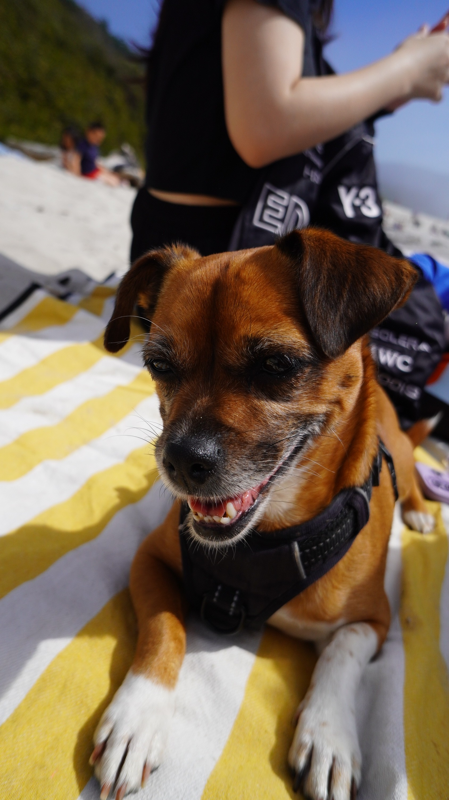

Taiwan → New York → Bay Area
Hey there,
I’m Kayla.
Yising Chen, if we’re being formal.
I design useful products
with a sense of play.
I’m a product and interaction designer based in the Bay Area. My work brings together UX/UI, game design, and hands-on implementation.

My full-time boss.
A little
more about me.
Before interfaces, I designed experiences for the stage.
I started in theater, working across video projection, stage, and visual design. In 2021, I moved from Taiwan to New York for an MFA in Design & Technology at Parsons.
That path led me to games and UX/UI at an indie game studio. Today, I design clearer everyday tools and interactive worlds people can play with.
What I bring
to a project.
Product design
- MVP scoping
- Research & testing
- User flows & information architecture
- UI & design systems
Figma · Claude Code · Codex
Game & interaction
- Game mechanics
- Interactive storytelling
- Rapid prototyping
- Motion & feedback
Unity · C# · After Effects
Design to implementation
- Responsive websites
- Interactive prototypes
- Creative coding
- AI-assisted implementation
Framer · HTML/CSS/JS · Plasmic · Git/GitHub
Also work with Photoshop · Illustrator · Procreate · Premiere
Out in
the world.
Out in Tech — UCLA Chapter
CCAM: Fluxus — Yale Center for Collaborative Arts and Media
Designing culture through interaction
Designing for play
Beyond interfaces
When I’m off screen…
Usually collecting trails, lakes, and mildly questionable travel plans. Often with Chita. Ideally with a jasmine green milk tea or matcha latte in hand.